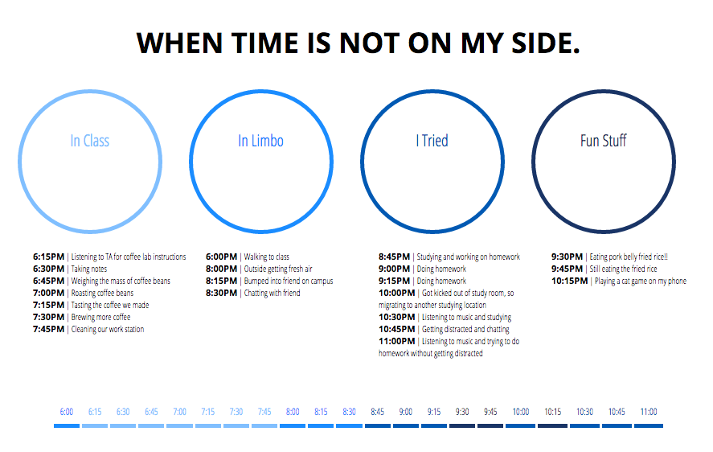
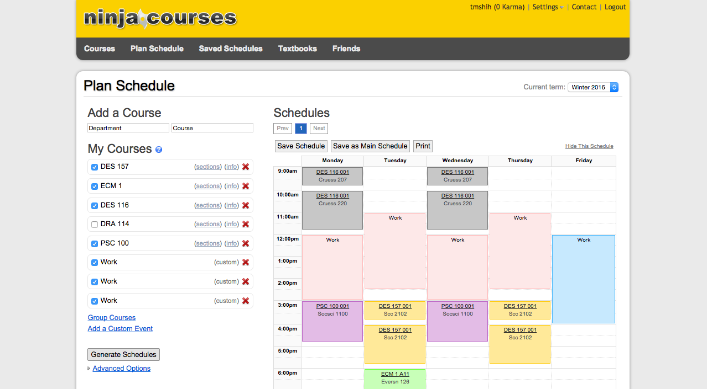
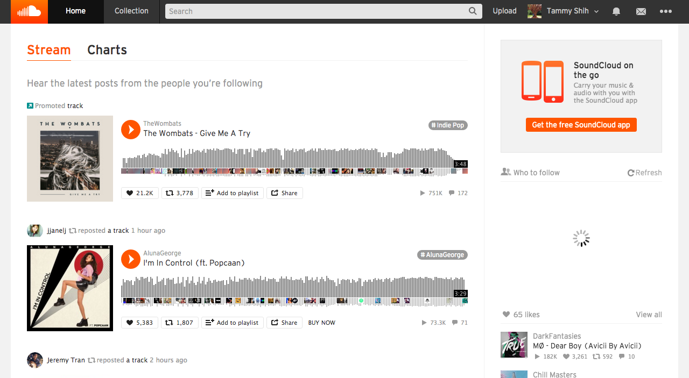

This is my final design after many tries and iterations for this exercise. Yay! I found my design to be an egaging visual and interactive solution to the exercise because of how simple the look and interface is. Visually, I kept it with a very white and minimalistic look to emphasize on the big four circles on the page. Those four circles highlight the four categories that my time-captures were sorted into. And based off of that, the time details would fall under each circle. When you first enter the webpage, you will only see those four circles and to show the detailed times, all you have to do is click on each circle to show or hide the details of the times. As you click to show and hide each category of time, the timeline of times will also show or hide according to which category is clicked. In terms of interactivity, I kept the interaction simple with clicks to each category to show or hide the details. I did want to incorporate a 'show all' or 'hide all' button, but I wasn't sure where to incorporate them where it would visually fit in and I also didn't have time to explore that part unfortunately. My favorite part of this page is the timeline on the bottom of the page. Instead of just limiting my exercise to be just categories and details, I really wanted to highlight how offtrack I would become when working on specific things. Color coding of the timeline shows exactly that! And as for color choice, I choose a range of blues simply because blue is my favorite color (haha)!
THIS WEBSITE is my holy grail every quarter when it comes time to register for classes. Ninja courses. Back in the day, way back when, when there was no such thing as schedule builder yet, students had to manually plan and draw out their class schedules every quarter to make sure no classes over lapped in times. I remember spending hours and hours planning out my schedule for my first quarter at UC Davis. Thankfully, I met an upperclassmen friend that introduced me to this handy dandy site called ninja course. This site is great: you can pick and choose the classes you're interested in taking by adding it in the 'Add a course' section. As you're typing in the boxes, it'll even list out suggestions of departments and classes to make it easier for you. Then they will even show you the details of each course and give you a list of sections to choose from. While generating your schedule, Ninja Courses will specifcy any classes that may conflict with each other and that's when you can find Plan B to reorganize your schedule again. I don't know how I would have lasted 4 years of college without this site. Even though UC Davis came out with the convinient tool of schedule builder, I still stay loyal to Ninja Courses.
Soundcloud is a site that I use quite often to listen to music. In fact, I actually use on a daily to listen to music. This site not only has great music but the interface design of this site is great as well. The biggest thing about this website that I appreciate the most is the fact that I can get to music right away. As soon as you go to the site, the home page is a list of suggestions of music, whether you have an account or not. The interface design of this site is really simple yet intuitive. The first homepage lets you discover new music based off of who you follow. And a small detail about this site that I really love and appreciate is the part where each song plays and instead of it being just a bar, it's a representation of the music's beat and flow (not sure if I made sense here). Overall, this website has an overall theme and design and it all ties in together extremely well.
